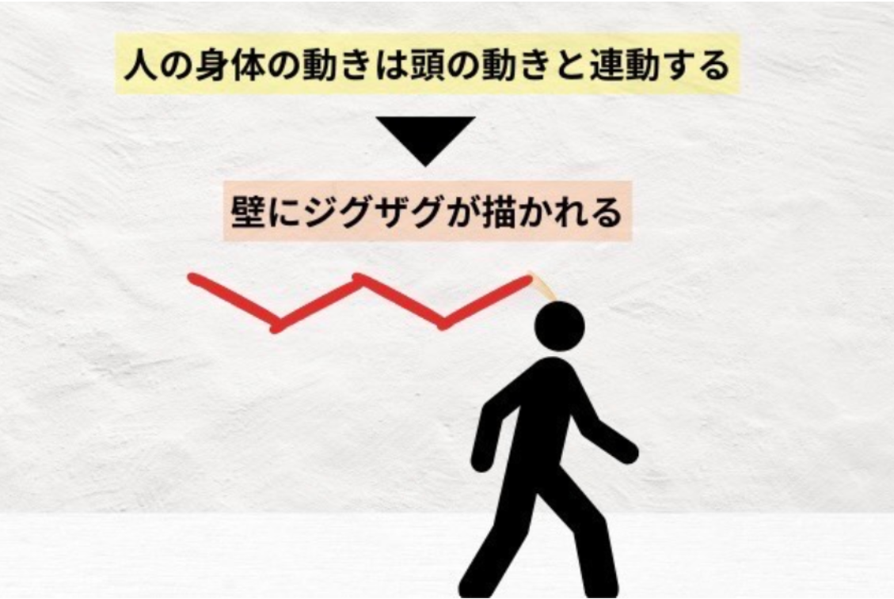
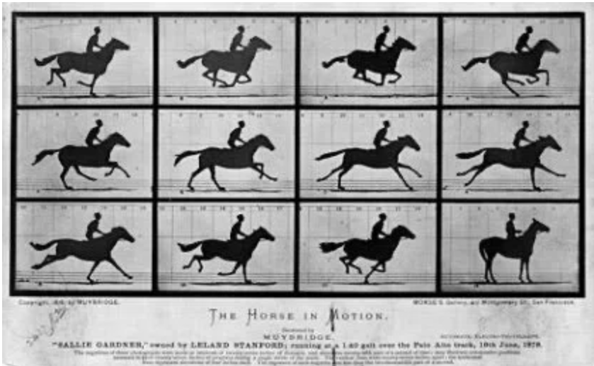
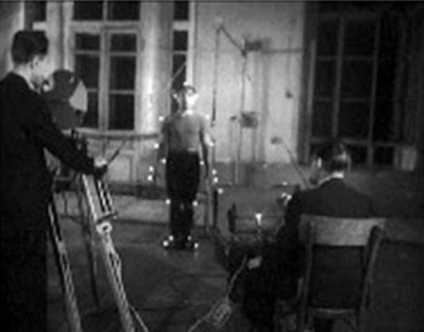
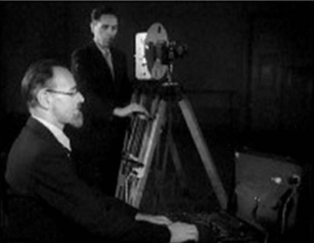
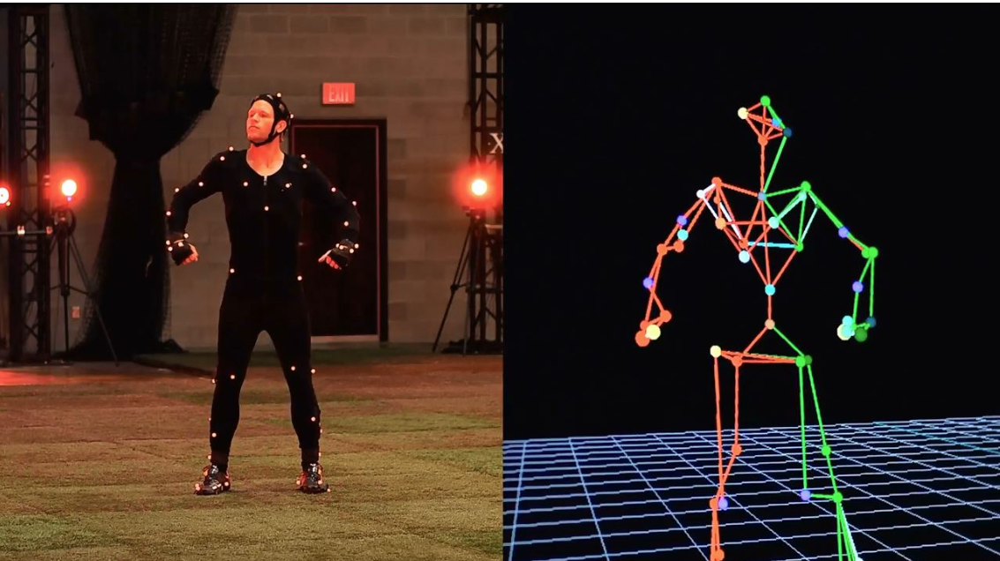

モーションキャプチャーの歴史
モーションキャプチャーによる運動計測#2 〜歴史と他の計測システムとの比較〜｜SPORTS
SENSINGスポーツ科学研究室
光学式モーションキャプチャの仕組み
| 株式会社スポーツセンシング
Motion Capture | IDIS
約2千年前に、古代ギリシャの哲学者 アリストテレス（Aristotelēs）が人間の動きを分析をする実験を考案した。アリストテレスはインクを浸した植物の葦を頭につけた人間が壁の横を歩くと、頭の動きがジグザグに書かれることを示唆した。

その2千年後、イタリアの物理学者 ジョヴァンニ・アルフォンソ・ボレリ（Giovanni Alfonso Borelli）が歩行解析における最初の実験を行った。力学の視点から筋肉の力と骨格の運動の関係を探求し、動作の原理を解明することを目指した。
19世紀に入り、イギリスの写真家 エドワード・マイブリッジ（Eadweard Muybridge）が馬の動きを複数のカメラを用いて撮影することで、肉眼では見ることができなかった馬の動きを詳細に表示した。この技術は、他の動物や人間の動きに応用された。また、画像を連続して表示させることにより、一連の動きを見ることが可能になった。

フランスの科学者 エティエンヌ＝ジュール・マレー（Étienne-Jules Marey）は、1秒間に12枚の連続撮影が可能な単一のカメラを開発した。それによって、人間の運動や動物の運動、昆虫の飛行などの追跡を詳細に確認することができるようになった。
20世紀に入り、ベルンシュタイン問題という身体の自由度に関する問題提起で有名なロシアの生物学者 ニコライ・ベルンシュタイン（Nikolai Bernstein）の計測が有名である。3次元計測ではないが、特徴点としてライトを使用するなど、これこそモーションキャプチャーの原型のひとつといえる。


技術が発展し、複数のモーションキャプチャーシステムが開発された。従来のものは身体にマーカーを付けるものであったが、マーカーを使用しないカメラやセンサーのみで動きを反映する「マーカーレス」のものも開発された。
